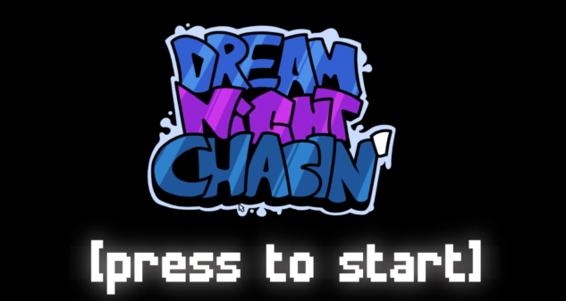

Dream Night Chasin DEMO
Una mod per il gioco Friday Night Funkin' dedicata al famoso streamer ChaseDream. Include le prime canzoni in anteprima prima del rilascio della versione completa! Esplora i mondi della mod, e fai uno scacco, ma quello matto!
DownloadScreenshots

Requisiti di sistema
- OS: Windows 10/Windows 11
- Processore: Intel i5-8400
- Memoria: 3 GB RAM
- GPU: Indefinito
- Spazio: 2 GB disponibili